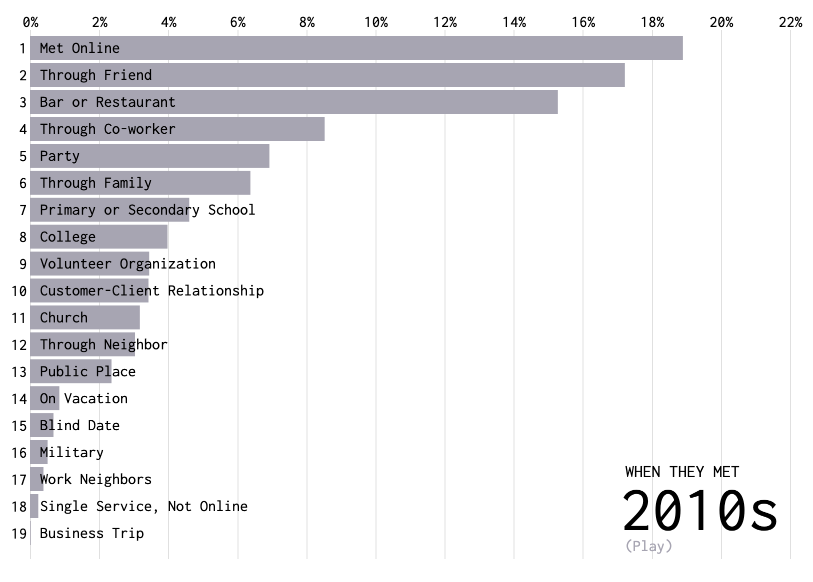
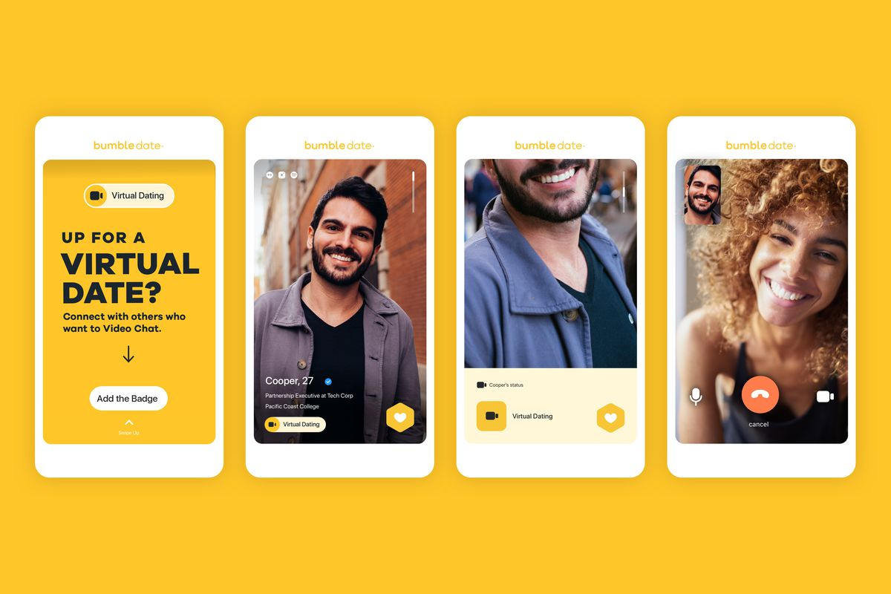

My favorite unit from this semester was Dating, Mating, and Partnering where we explored the world of modern dating. I have included some information, articles and links that I found interesting from this unit.
You cannot talk about Modern Dating without talking about online dating. There are some key differences between meeting someone online versus meeting someone in real life and Dan Slater in his article Love in the Time of Algorithms notes these differences. For one, when you meet someone online you are falling for their "digital representation", at first at least. "Attraction tactics" that someone would display in a bar, cannot be exercised nor detected in an online setting. Despite the differences, online dating has become increasingly popular over the years.
If you go to this link you can find a visualization of how people meet over the years. As of the 2010s online has become the most popular way people meet.

The 36 questions were curated by Psychologist Arthur Aron in an attempt to foster intimacy between two people in one encounter. In this article you can see the full list of questions and learn more about their significance. Below is a video of these 36 questions in action.
One of the caveats of Modern Dating is the infinite number of choices. Aziz Ansari touched upon this in his book Modern Romance , and his show Master of None. Ansari compares dating to picking out a restaurant stating “At certain times, though this ‘I need the best” mentality can be debilitating. .. The problem is that I know somewhere there is a perfect meal for me and I have to do however much research I can to find it.” However, what he found is there is no "best option". Dr. Barry Schwartz tackles the paradox of choice by categorizing people in two categories: Maximizers & Satisficers. Maximizers are always constantly trying to find the very best option doing endless research, while Satisficers will settle for a good enough option. While Maximizers might end up making "better" choices, they are overall less happy.
This constant desire to search for the best, can be debilitating and causes online daters a lot of stress.
Quarantine has really highlighted some of the major concepts we touched upon in class over the semester. For one, people need social interaction. Erich Fromm argues in his book Art of Loving that the deepest need of a man is to overcome his separatness. He strives to leave this prison of his aloneness. As singles have unexpectedly entered quarantine, this need for social interaction has only heightened. The NY Times reported on this new world of Virtual Dating.
Dating Apps have taken a new approach due to the situation and have added video chat features to their product.
